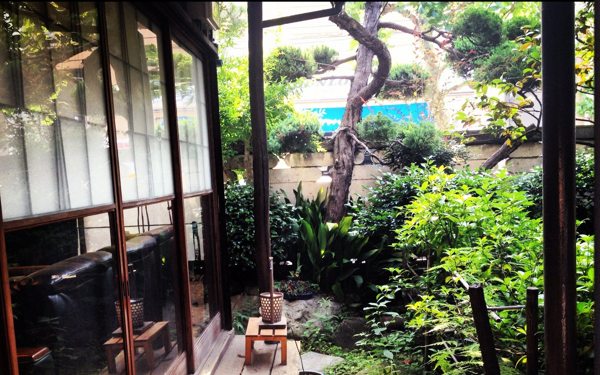
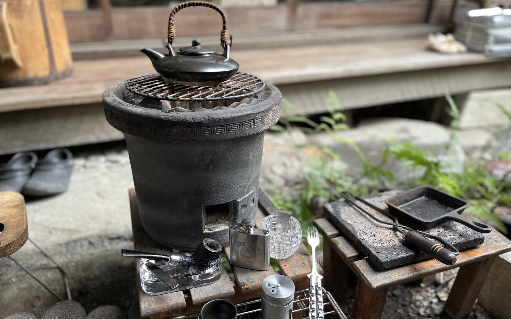
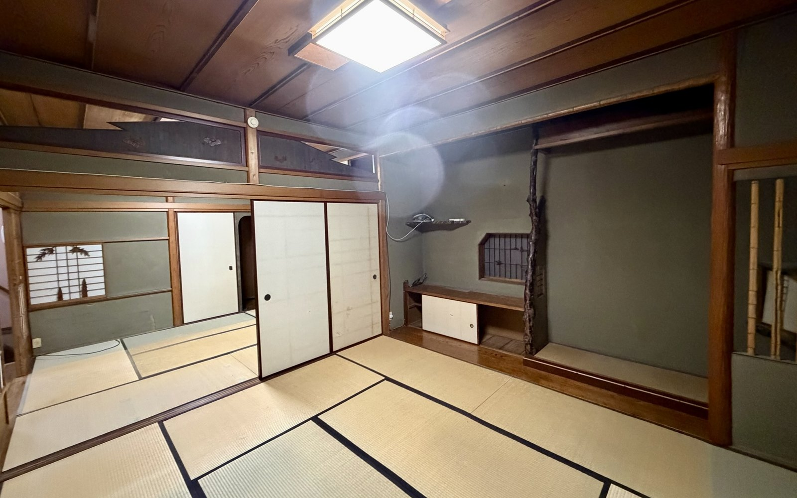
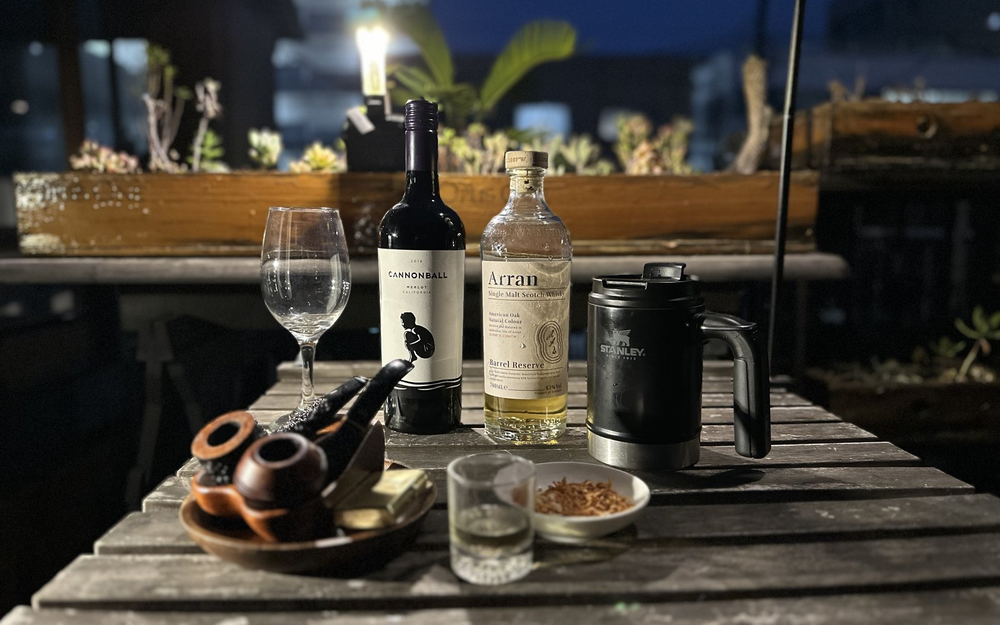
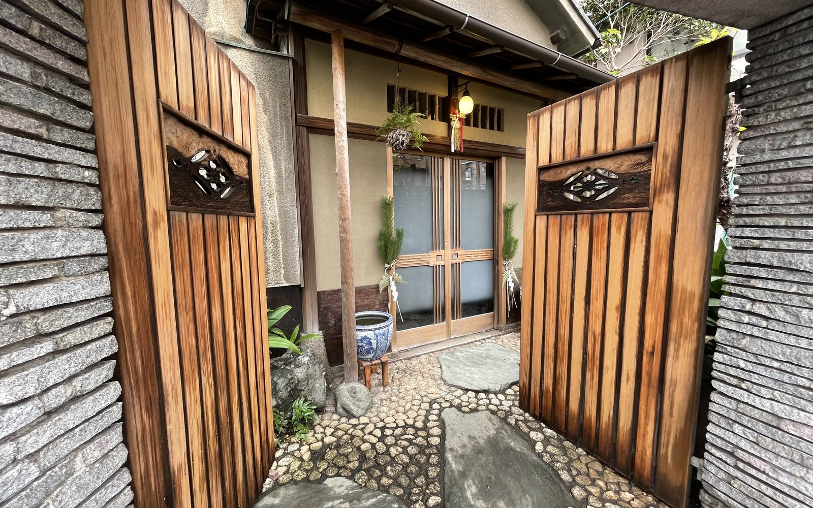
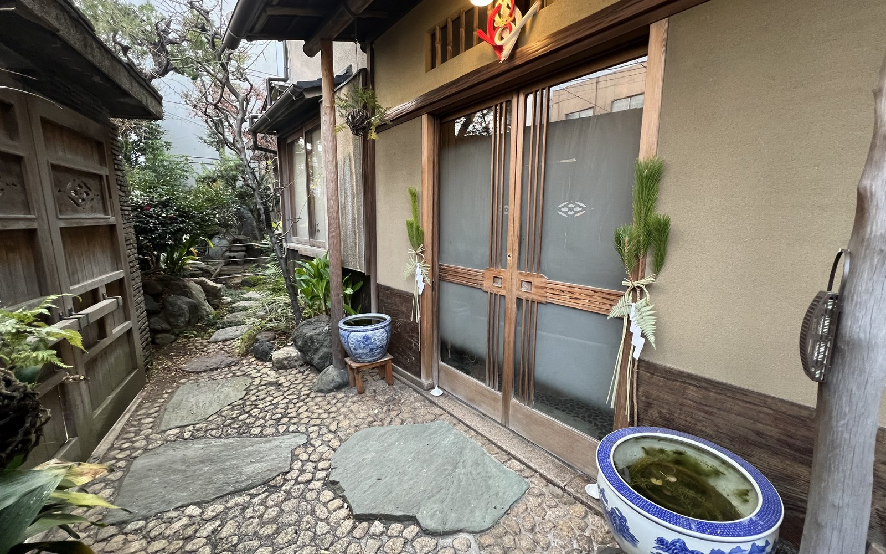
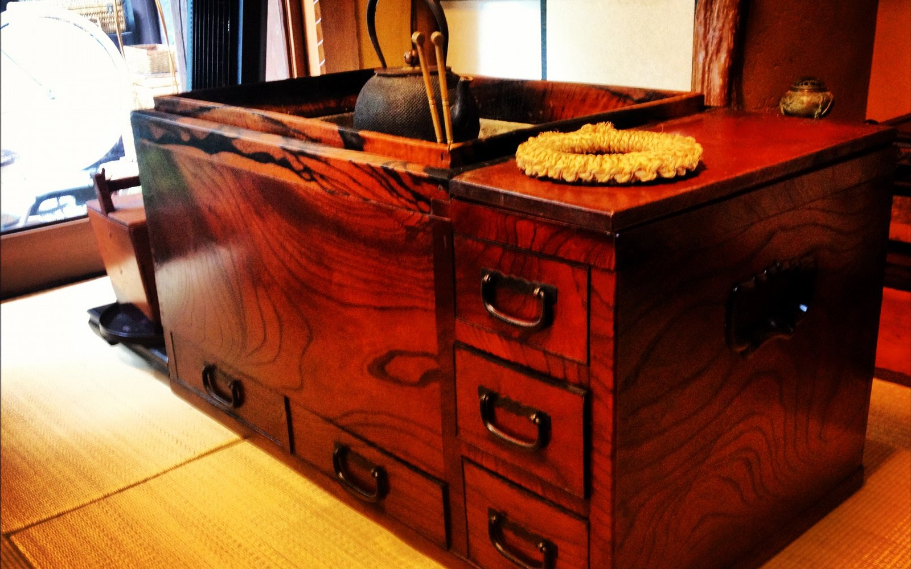
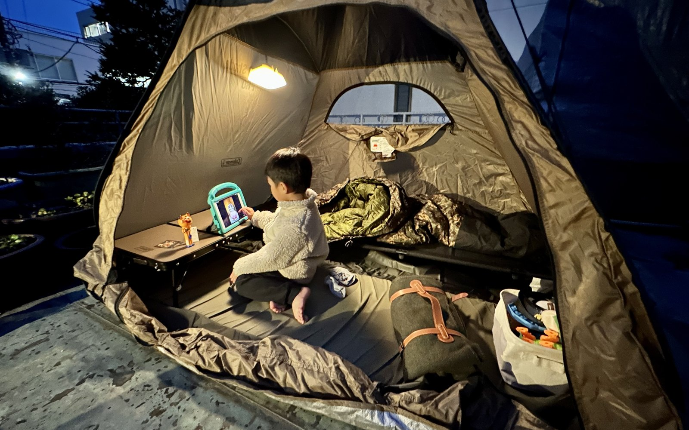
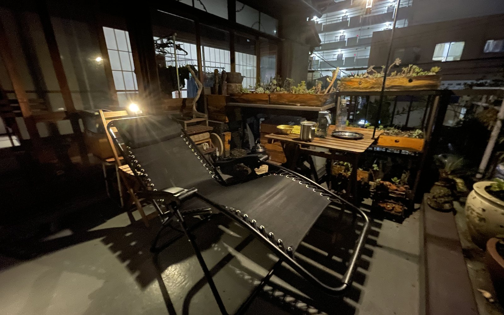

暮らしの反応を知る
自分や家族が、庭・畳・古い建具・外時間にどう反応するかを、所有の前に確かめられます。
Experience Menu / Living
家にいながら、ハレの日をつくる。古い日本家屋を借りて、庭と時間のある暮らしを体験する住まいの選択肢です。
Start
家を買うか、借りるか。
住まいの話になると、どうしてもこの二択で考えがちです。持ち家が得なのか、賃貸が得なのか。資産になるのか、ならないのか。老後はどうするのか。
もちろん、それはとても大切な問いです。住居は、教育費・老後資金と並ぶ人生の大きな支出です。特に都内では、住まい方をどう設計するかが、人生全体の自由度を左右します。
けれど、もうひとつ別の問いがあります。
それは、「自分は、どんな暮らしに反応するのか」という問いです。
庭がある暮らし。畳の部屋がある暮らし。障子越しに光が入る暮らし。古い木の建具や、年月を重ねた柱に囲まれる暮らし。友人を呼び、外で食事をし、子どもが家の中と外を行き来する暮らし。
そういう暮らしは、家を買わなければ手に入らない。そう思い込んでいる人は、少なくないかもしれません。
でも、そうとは限りません。戸建てを借りて暮らす。古い日本家屋を、所有せずに体験してみる。そんな選択肢もあります。私は実際に18年間試してみました。
Time
新しい家は、建てることができます。
けれど、古い家は新しく建てられません。
築60年、70年と時間を重ねた日本家屋には、新築では再現できない空気があります。柱の色、建具の重さ、畳の匂い、庭の石、障子越しの光。それはデザインではなく、時間そのものです。
もちろん、古い家には不便もあります。冬は寒いかもしれない。虫も出るかもしれない。設備は最新ではないかもしれない。メンテナンスにも気を使います。
それでも、そこには便利さだけでは測れない価値があります。
家を、単なる設備や資産としてではなく、歴史と暮らしの器として味わう。
古い日本家屋を借りて暮らすことは、日本の住まいの記憶に、生活者として触れる体験でもあります。
Garden

戸建ての魅力は、建物の広さだけではありません。
庭がある。外に出られる。火を囲める。人を呼べる。家の中と外の境目が、少しゆるくなる。
庭で友人とバーベキューをする。ベランダで日光浴をする。夏にはビニールプールを出す。夜にはテントを張って、家で小さなキャンプをする。
遠くへ行かなくても、家の中に小さな非日常をつくることができます。
これは、特に子どもが小さい時期には大きな価値になります。旅行や外食に行くのが大変な時期でも、家に余白があれば、暮らしの中に遊びをつくることができる。
ただの休日が、少し特別な日になる。いつもの家が、子どもにとっての遊び場になる。外出しなくても、家族の記憶に残る時間が生まれる。
家にいながら、ハレの日をつくる。
それが、庭や外空間のある住まいの力です。
Air Pocket

多くの人は、戸建ての暮らしを所有と結びつけて考えます。
庭のある家に住みたい。広い家に住みたい。人を呼べる家に住みたい。だから、家を買う。
もちろん、それもひとつの正解です。
けれど、戸建ての暮らしそのものは、必ずしも購入しなければ得られないわけではありません。
買うには重い。でも、借りれば体験できる。
ここに、住まいの思考のエアポケットがあります。
所有権を持つことと、暮らしの効用を味わうことは、同じではありません。土地や建物を所有しなくても、庭のある暮らし、古い家の空気、人を招ける余白を体験できる場合があります。
むしろ、賃貸だからこそ試せることもあります。
買ってしまえば、修繕、税金、売却、相続、将来の流動性まで背負うことになります。けれど賃貸であれば、所有の重さを背負わずに、暮らしの体験だけを先に味わうことができます。
Trade Off

都内で住まいを探すと、駅近、新築、設備、セキュリティ、利便性に目が向きます。それらはもちろん大切です。
ただ、そのすべてを取ろうとすると、家賃も購入価格も高くなります。特にマンションでは、利便性にお金を払う感覚が強くなります。
一方で、戸建て賃貸には別の可能性があります。
駅から少し離れる。築年数を受け入れる。最新設備にこだわりすぎない。少し手間のかかる暮らしを許容する。
そうすると、同じ家賃でも、より広い空間や、庭や、部屋数や、外とのつながりを得られることがあります。
便利さを少し手放すと、暮らしは広くなる。
これは、住居費を下げるためだけの話ではありません。お金の使い方を、利便性から体験価値へ振り替えるという考え方です。
Reality

こうした物件は、今の都内では決して多くありません。
庭があり、畳の部屋があり、古い日本家屋の空気があり、人を迎えられる余白がある。そういう戸建て賃貸に出会えるかどうかは、タイミングにも大きく左右されます。
だから、この体験をそのまま簡単に再現できるとは思っていません。
ただ、こういう選択肢があると知っているだけで、住まいの探し方は変わります。
所有する前に、暮らしを試してみる。便利さだけでなく、余白や時間の質で住まいを見てみる。
その視点は、たとえ同じ物件に出会わなくても、次の選択に残っていきます。
What Changes

古い日本家屋を借りて暮らすと、家を見る目が変わります。
新しさだけが価値ではない。駅近だけが価値ではない。所有だけが価値ではない。便利さだけが暮らしの豊かさではない。
庭で過ごす時間。畳に座る感覚。障子越しの光。家に人が集まる空気。子どもが家の中で遊びを見つける姿。
そうしたものは、住宅情報の数字には出てきません。
でも、人生の記憶には残ります。
住まいは、単に寝る場所ではありません。暮らしの余白をつくる器です。そしてその器は、必ずしも買わなくても体験できます。
自分や家族が、庭・畳・古い建具・外時間にどう反応するかを、所有の前に確かめられます。
利便性だけではなく、記憶に残る時間へ住居費を振り向ける感覚が生まれます。
外出しなくても、家の中と外を行き来しながら、特別な休日をつくれます。
日本家屋の空気や庭のある暮らしを、言葉ではなく生活の中で手渡せます。
Three Axes
戸建ての豊かさや歴史ある家の空気は、所有しなくても体験できると気づけます。住まいを資産や利便性だけでなく、暮らしの器として見る視点が生まれます。
庭、外時間、畳、古い建具、人を招く余白によって、休日や子育て、住居費の使い方が変わります。家そのものが、日常の中にハレの日をつくる場になります。
家族、子ども、友人との記憶が生まれます。日本家屋の空気や庭のある暮らしを、言葉だけではなく、生活の中で次の人に伝えられます。
Scenes




Closing
家は、買うもの。戸建ては、所有するもの。庭のある暮らしは、特別な人だけのもの。そう思っていると、見落としてしまう選択肢があります。
古い日本家屋を借りて暮らす。所有せずに、歴史ある住まいの時間を味わう。庭やベランダで、家族や友人とのハレの日をつくる。
それは、住まいを買う前に、暮らしの価値を試す体験です。買えない暮らしも、借りれば体験できる。そして、所有しなくても、記憶に残る家は持てるのかもしれません。
体験メニュー一覧へ戻る